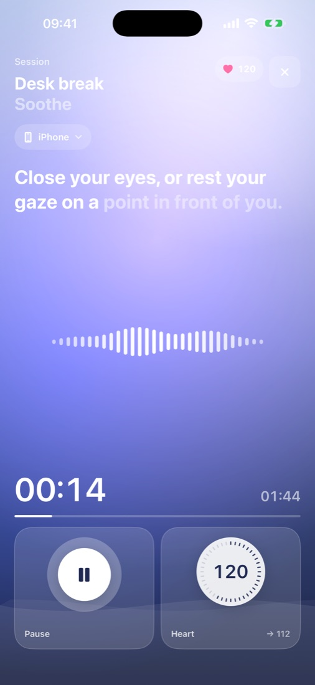
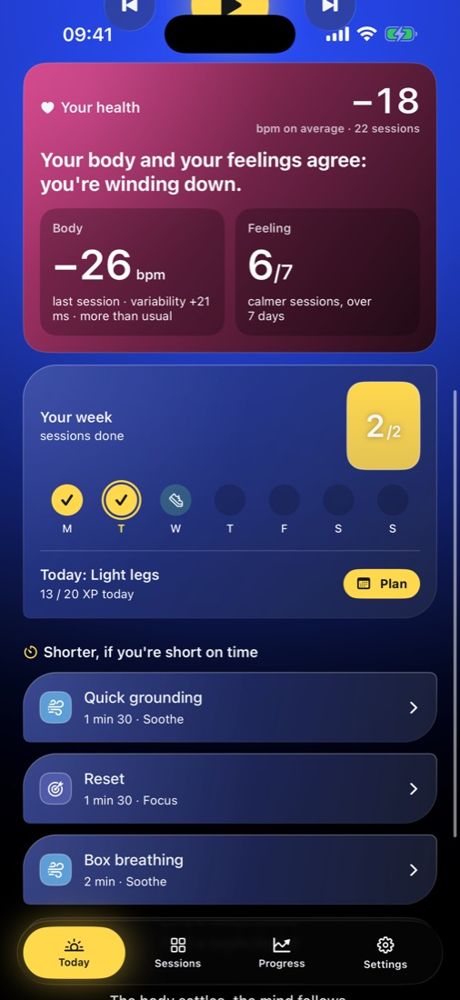
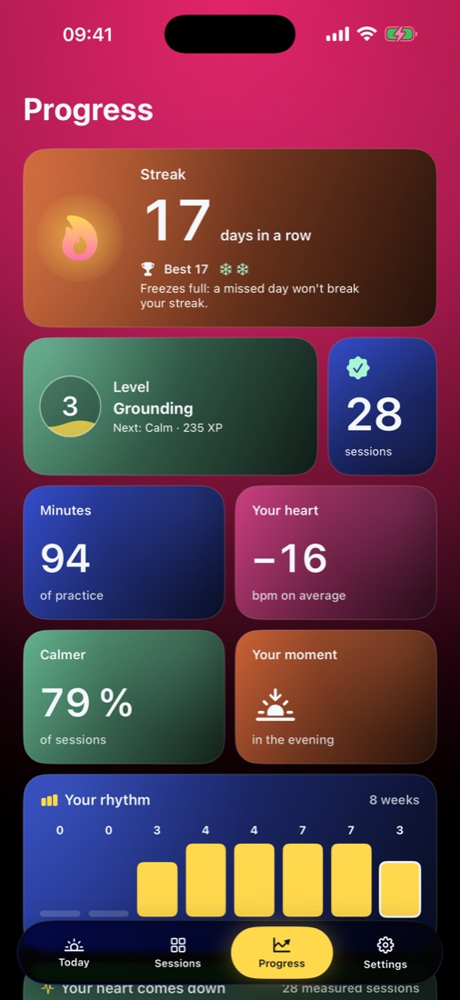
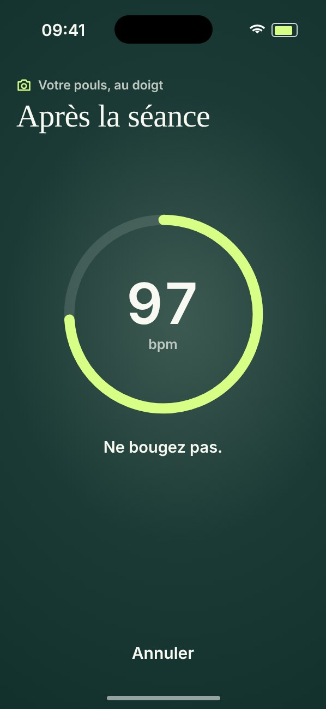
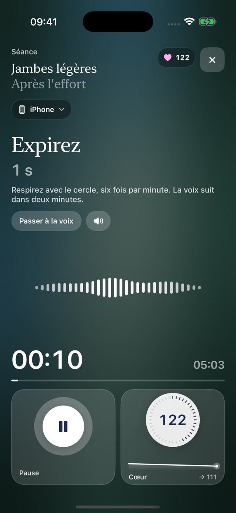
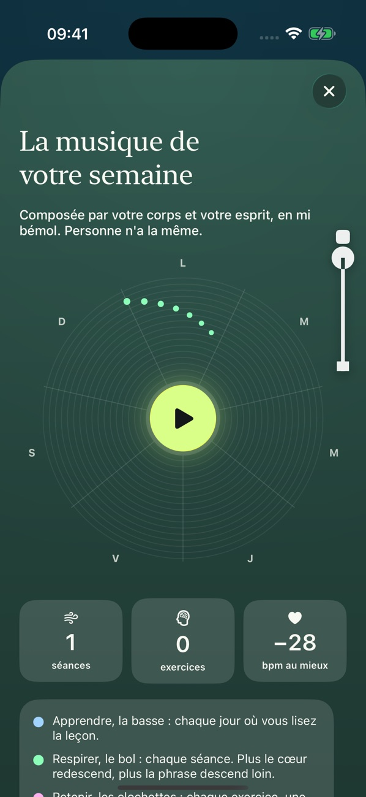

Every sport · iPhone and iPad
After sport, breathe.
You stop your watch, not your body: your heart is still at 165, your breath is short. Running, soccer, cycling, climbing, yoga: as soon as your workout ends, a voice guides you. Your breath slows, your body lets go, your mind settles.
Free during the beta · no credit card · the studies we cite

You've crossed the line
Slow down.
Souffle is waiting
a little further on.
Scroll gently, no faster than you breathe.
Three breaths
The world
slows down.
Breathe in through your nose while holding your finger on the screen. Let go, and let the air out a little longer than it came in.

90 seconds later
Your heart rate
has come down.
Breathing out for longer than you breathe in helps your heart slow down after exercise. Replere guides you by voice, right after your workout, standing or sitting, with or without a watch.

Night falls
Souffle keeps watch.
You'll sleep better.
Every sport. From 90 seconds to a few minutes. Free during the beta.
0 0
beats per minute, before and after a session (example)
0
the shortest session, standing, eyes open
0
your finger on the camera, and your pulse appears
0 0
breathe in, then breathe out: six breaths a minute, the pace that slows your heart
The moment after
After the effort
You stop your watch. Your body isn't done yet: your heart is still racing, your breath is short, your head is spinning. We put so much care into training, and so little into the minutes that follow.
New · No watch needed
Your heart rate, measured by the camera.
Place your index finger on the iPhone's rear lens. The flash lights up your finger, and with each heartbeat your blood very slightly changes the color of your skin. Replere reads that rhythm. It's how fingertip pulse oximeters work.
Thirty seconds before the session, thirty seconds after. You see how far your heart rate has come down.
- Before
- 112 bpm
- After
- 97 bpm
- Drop
- −15
Sample measurement. An estimate for comparing before and after, not a medical measurement. A watch or a chest strap is still more accurate, and Replere reads those too. No images are kept.

After the effort, four steps
Breathe, let go, notice, get going.
- 01BreatheSlow breathing, with the out-breath longer than the in-breath. Your heart rate comes down a notch with each breath.
- 02Let goThe voice guides you to what did the work: your legs after a run or a game, your shoulders after swimming or climbing, your whole body after the gym.
- 03NoticeA moment to notice how you feel, recall what felt good during the effort, and keep it.
- 04Get goingThe voice brings you back: your feet on the ground, your eyes open, a stretch. You don't end up drowsy; you head into the rest of your day feeling fresh.

A memory of yourself
Your week, in music.
Each session adds a phrase on the singing bowl, each exercise adds chimes, each lesson a low note. On Sunday, you listen to what your body composed. And once a week, Replere shows you what you wrote down seven days earlier.

A word from the founder
I built Replere because we put so much care into training, and so little into the minutes that follow. I wanted an app that looks after the body and the mind, with no ads and no empty promises. If anything bothers you, write to contact@replere.app. I read everything.
Anatole Pitron, founder · contact@replere.app
Before you try
The questions people ask us.
How long is a session?
From ninety seconds to a few minutes. The shortest post-workout session is done standing, eyes open, still sweating.
Does it work without a watch?
Yes. Place your index finger on the rear camera for thirty seconds before the session, then again after. The flash lights up your finger, the app reads your pulse, and you see how far your heart rate has come down. An estimate for comparison, not a medical measurement.
What about a Garmin, an Apple Watch or a chest strap?
Your heart rate shows live during the session. Garmin and chest straps broadcast over Bluetooth, with nothing to install on the watch. Apple Watch goes through the Replere watch app and Apple Health.
Is it free?
During the beta, everything is free, no credit card needed. When it launches on the App Store, sessions will stay free. Replere Plus will add programs and a detailed view of your data, for €5.99 a month or €39.99 a year.
Where does my health data go?
Your sessions and health data stay on your iPhone. The one exception, if you connect Garmin: your workouts pass, encrypted, through a Replere server in France, which deletes them as soon as your iPhone has received them. No ads, no trackers. The privacy policy lists, line by line, what the app reads in Apple Health.
Is it proven?
The tools largely are. In several trials, slow breathing speeds up the return to rest after exercise, and muscle relaxation improves sleep. Sophrology as a discipline has been studied less. The studies and their limits are cited. Replere is not a medical device.
Free during the beta
Try Replere after your next workout.
All sessions stay free. When it launches on the App Store, Replere Plus will add programs and a detailed view of your data, for €5.99 a month or €39.99 a year. Your data stays on your iPhone.
On a computer? Scan this code with your iPhone camera.
Replere supports recovery; it is not a medical device. What the research says, with sources.
Photos: Yazid N, Alekon pictures and Daniel Lincoln, on Unsplash.